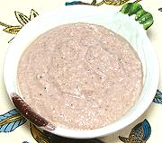

|
Georgian Walnut Dressing / DipGeorgia | ||||
| Makes: Effort: Sched: DoAhead: |
1-3/4 cups ** 1 hr Yes |
This dressing is extracted from our Geogian Green Bean & Walnut Salad recipe - it deserves to be used for dressing other lightly cooked vegetables, and as a dip for vegetable sticks. | |||
|
6 4 1/4 2 2 1/3 2 1/2 |
oz cl c T T c t t |
Walnuts Garlic Wine Vinegar red Lemon Juice Water Olive Oil Salt Pepper, black |
MAKE - (1 hr - 20 min work)
|